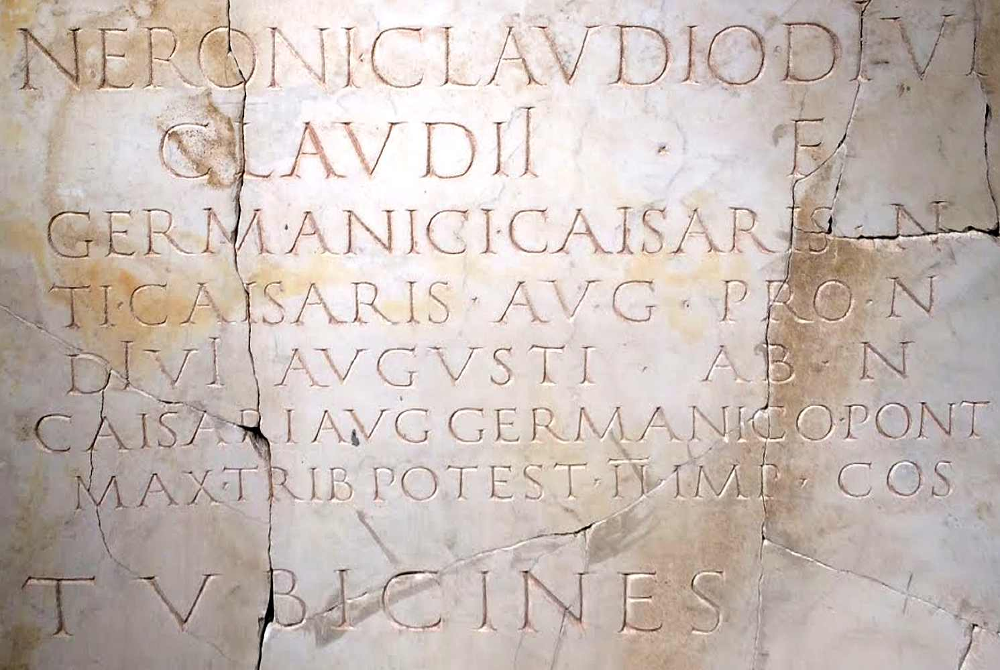

There are a number of ways to date a particular inscription, but inscriptions that name emperors are among the easiest and, in some circumstances, the most precise. Each of the various titles and offices that an emperor assumed can be closely dated. Therefore, by examining one or more of these these titles, it is possible to determine a particular range of dates for the given inscription, usually within a year and often an even narrower range.
The key to dating an inscription is the concept of terminus post quem. Rarely can an artefact be precisely dated. Usually we can only say that the artefact was deposited before a particular date (a terminus ante quem) or after a particular date (a terminus post quem). The dates generated with this tool are not necessarily the exact date of the inscription. Rather, they are the date after which the inscription must be dated (the terminus post quem). If we know, for example, that Augustus took on the title of pater patriae on January 1, 2 B.C., then we know that any inscription which contains the abbreviation PP (pater patriae) must date to January 1, 2 B.C. or later. It obviously cannot have been erected before that date, but, because Augustus used this title from that point on, it could date to anytime after that.
One of the most useful titles you can use for dating an inscription is the record of the tribunician power (usually abbreviated TRIB POT or TR P). Following the precedent of Augustus, upon assuming the purple, emperors took on the power of the tribune (tribunicia potestas) and renewed it annually as a rule. In inscriptions, the renewal of this tribunician power is indicated by the Roman numeral that follows the TRIB POT. Therefore, if an inscription says TRIB POT III, we can be certain that the inscription dates somewhere between the beginning of the emperor’s third year and the beginning of his fourth year (here we actually have a terminus ante quam as well), based on the date they assumed the principate.
Consular years are also very useful for dating. Although emperors did change how consuls were chosen, they did not change the length of time the consul served or when they began their service from that of the Republican consulship. A consulship began on the first of the year and was given up on December 31 of that same year. Therefore the consular year also provides terminus post quem and a terminus ante quem for the inscription, just as the tribunician power does.
Other titles and honors are less precise. Imperatorships (IMP) are only dateable to a particular year or span of years, the precise date that honor was bestowed is not recorded. Other titles were kept throughout the life of the emperor and therefore only provide us termini post quem.
In order to date a particular inscription, identify the latest terminus post quem to find the earliest possible date for an inscription and then find the earliest terminus ante quem (usually from consular years or tribunician powers) to find the latest possible date.
Take a look at the following inscription dedicated to Nero:

NERONI · CLAVDIO · DIVI
CLAVDII · F
GERMANICI · CAISARIS · N
TI · CAISARIS · AVG · PRO · N
DIVI · AVGVSTI · AB · N
CAISARI AVG GERMANICO · PONT
MAX · TRIB POTEST · II · IMP · COS
T V BICINES
There are four dateable elements in this inscription:
Image Source: taken by the author at the Terme di Diocleziano in Rome, March 8, 2014.